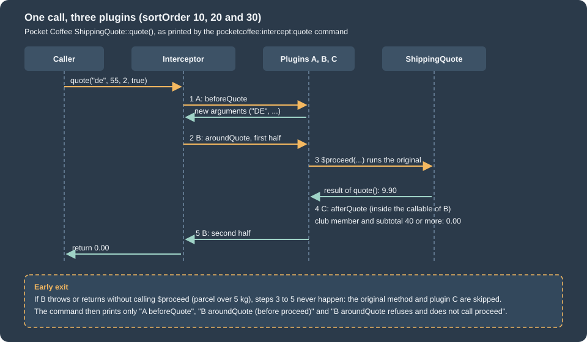

Plugins, Events and Observers
|
This content was generated with the assistance of AI and should be verified against the official documentation before being relied on in production. |
Magento is built so that a module rarely edits somebody else’s class. It extends the platform from the side, and the two extension points that cover most needs are the plugin, which wraps a public method of a class or interface, and the observer, which listens to a named event that the code dispatches. A third way, the preference, replaces a whole class and is treated on the dependency injection page. This page builds both mechanisms on a small Pocket Coffee class, shows what the Framework generates for them, and then breaks them on purpose so that the limits are known before they surprise a project.
The page was written against Magento Open Source and Adobe Commerce 2.4.9 (generally available 2026-05-12) and Mage-OS 3.6.0 (2026-10-14, built on the 2.4.9 code base) and checked on 2026-10-27. Plugins and observers are in-process PHP, so they apply to Magento Open Source, to Adobe Commerce on premises or on cloud infrastructure, and to Mage-OS. Adobe Commerce as a Cloud Service (ACCS) accepts no PHP modules and offers out-of-process extensibility instead; Adobe I/O Events state that Magento Open Source is not supported, and the webhooks documentation never mentions Open Source, so for Open Source and Mage-OS the PHP mechanisms of this page are the supported route. The editions are compared on the editions page and the out-of-process model on the out-of-process extensibility page.
Everything below was run on a Mage-OS 3.6.0 installation in developer mode (PHP 8.5.12, MariaDB 11.8.9, OpenSearch 3.9.0,
Valkey 9.1.3) with two small modules of the Pocket Coffee shop: PocketCoffee_Intercept, which holds a shipping quote class,
three plugins, two observers and a few commands, and PocketCoffee_InterceptOverride, which switches one plugin and one
observer off from outside. The module layout and the commands are explained on the
module anatomy page.
Choosing an extension point
Before writing code, decide which mechanism fits. The questions are always the same: do I need to change what a method receives or returns, do I only need to know that something happened, or do I need a different class altogether?
| Mechanism | What it does | Strengths | Limits |
|---|---|---|---|
Plugin (interceptor) |
Runs code before, after or around a public method of a class or an interface. |
Changes arguments and results. Several modules can wrap the same method, in a configured order. Nothing in the original class changes. |
Public, non-final, non-static methods of objects built by the ObjectManager only. An around plugin that does not call |
Observer |
Runs when code dispatches a named event, with the data attached to the event. |
Decoupled from the dispatcher. Several observers per event. Area-specific registration. |
Only exists where the platform or a module dispatches an event. Cannot change the return value of anything. Order is not guaranteed. |
Preference |
Tells the ObjectManager to build another class whenever an interface or a class is requested. |
Complete control of the replaced class. |
One winner per type: two modules that prefer different classes conflict, and the replaced class loses every core fix. |
Virtual type or argument in |
Injects another dependency or another configuration into an existing class. |
No PHP code at all for simple cases. |
Only for what the constructor already accepts. |
Out-of-process (I/O Events, webhooks, App Builder) |
Sends an event or a blocking call to an external application. |
Does not run in the shop’s PHP process, and is the only choice on ACCS. |
Adobe Commerce only. Webhooks are synchronous, events asynchronous, and the shop must reach the application. |
Adobe’s architecture guidance for extensions recommends plugins, overriding interface preferences and event observers over direct class instantiation, and warns that "direct class instantiation is not recommended because the class can be rewritten". The flowchart condenses the choice into questions you can ask of a change request.
The Pocket Coffee class used on this page
The shop sells beans in two shipping zones, Spain and the rest of the European Union, with a limit of 5 kg per parcel and a
Coffee Club group that ships free above 40 EUR. The class below prices one parcel. It is deliberately plain, because the
interesting code lives in the plugins that wrap it. The interface carries the @api tag that marks a contract other modules may
rely on, and the module maps it to the class with a preference.
<?php
declare(strict_types=1);
namespace PocketCoffee\Intercept\Api;
/**
* Shipping price for a Pocket Coffee parcel.
*
* @api
*/
interface ShippingQuoteInterface
{
/**
* Price in EUR for one parcel.
*
* @param string $country ISO 3166-1 alpha-2 code
* @param float $subtotal Cart subtotal in EUR
* @param float $weightKg Parcel weight in kilograms
* @param bool $clubMember Whether the customer belongs to the Coffee Club group
* @return float
* @throws \Magento\Framework\Exception\LocalizedException
*/
public function quote(string $country, float $subtotal, float $weightKg, bool $clubMember = false): float;
}The class implements the interface, keeps a trace of the steps it takes so that the examples can print the call order, and
dispatches an event of its own at the end of quote(). Two details are there to be broken later: round() is protected
and describe() is final.
<?php
declare(strict_types=1);
namespace PocketCoffee\Intercept\Model;
use Magento\Framework\Event\ManagerInterface;
use Magento\Framework\Exception\LocalizedException;
use PocketCoffee\Intercept\Api\ShippingQuoteInterface;
class ShippingQuote implements ShippingQuoteInterface
{
private const EU = ['AT', 'BE', 'BG', 'HR', 'CY', 'CZ', 'DK', 'EE', 'FI', 'FR', 'DE', 'GR', 'HU', 'IE', 'IT', 'LV',
'LT', 'LU', 'MT', 'NL', 'PL', 'PT', 'RO', 'SK', 'SI', 'SE'];
public function __construct(
private readonly CallTrace $trace,
private readonly ManagerInterface $eventManager
) {
}
/**
* @inheritDoc
*/
public function quote(string $country, float $subtotal, float $weightKg, bool $clubMember = false): float
{
$this->trace->add('ShippingQuote::quote(' . $country . ')');
if ($country === 'ES') {
$price = $subtotal >= 40.0 ? 0.0 : 4.90;
} elseif (in_array($country, self::EU, true)) {
$price = 9.90;
} else {
throw new LocalizedException(__('Pocket Coffee does not ship to %1.', $country));
}
$price = $this->round($price);
$this->eventManager->dispatch(
'pocketcoffee_shipping_quoted',
['country' => $country, 'subtotal' => $subtotal, 'price' => $price]
);
return $price;
}
/**
* Protected: a plugin declared for round() is never called.
*/
protected function round(float $price): float
{
$this->trace->add('ShippingQuote::round');
return round($price, 2);
}
/**
* Final: the generated interceptor cannot override it, so a plugin is never called either.
*/
final public function describe(): string
{
$this->trace->add('ShippingQuote::describe');
return 'Pocket Coffee parcel';
}
}The CallTrace class is a shared service (the ObjectManager creates one instance per request) with add(), all() and
reset(); it is the only reason the examples can show an order of execution, and production code would use the logger
instead. The module declares the preference and the three plugins in etc/di.xml; the plugin elements are explained one by one
in the next section.
<?xml version="1.0"?>
<config xmlns:xsi="http://www.w3.org/2001/XMLSchema-instance" xsi:noNamespaceSchemaLocation="urn:magento:framework:ObjectManager/etc/config.xsd">
<preference for="PocketCoffee\Intercept\Api\ShippingQuoteInterface" type="PocketCoffee\Intercept\Model\ShippingQuote"/>
<type name="PocketCoffee\Intercept\Model\ShippingQuote">
<plugin name="pocketcoffee_normalize_country" type="PocketCoffee\Intercept\Plugin\NormalizeCountryPlugin" sortOrder="10"/>
<plugin name="pocketcoffee_parcel_limit" type="PocketCoffee\Intercept\Plugin\ParcelLimitPlugin" sortOrder="20"/>
<plugin name="pocketcoffee_coffee_club" type="PocketCoffee\Intercept\Plugin\CoffeeClubPlugin" sortOrder="30"/>
</type>
<!-- Scenarios of the plugin chain: three plugins per class, sortOrder 10, 20 and 30 -->
<type name="PocketCoffee\Intercept\Model\Chain\ChainA">
<plugin name="chain_a_p1" type="PocketCoffee\Intercept\Plugin\Chain\P1" sortOrder="10"/>
<plugin name="chain_a_p2" type="PocketCoffee\Intercept\Plugin\Chain\P2" sortOrder="20"/>
<plugin name="chain_a_p3" type="PocketCoffee\Intercept\Plugin\Chain\P3" sortOrder="30"/>
</type>
<type name="PocketCoffee\Intercept\Model\Chain\ChainB">
<plugin name="chain_b_p1" type="PocketCoffee\Intercept\Plugin\Chain\P1" sortOrder="10"/>
<plugin name="chain_b_p2" type="PocketCoffee\Intercept\Plugin\Chain\P2Around" sortOrder="20"/>
<plugin name="chain_b_p3" type="PocketCoffee\Intercept\Plugin\Chain\P3" sortOrder="30"/>
</type>
<type name="PocketCoffee\Intercept\Model\Chain\ChainC">
<plugin name="chain_c_p1" type="PocketCoffee\Intercept\Plugin\Chain\P1Around" sortOrder="10"/>
<plugin name="chain_c_p2" type="PocketCoffee\Intercept\Plugin\Chain\P2" sortOrder="20"/>
<plugin name="chain_c_p3" type="PocketCoffee\Intercept\Plugin\Chain\P3Around" sortOrder="30"/>
</type>
<!-- A plugin whose type is a virtual type of a plugin class -->
<virtualType name="PocketCoffee\Intercept\Plugin\Chain\VirtualP1" type="PocketCoffee\Intercept\Plugin\TracePlugin">
<arguments>
<argument name="label" xsi:type="string">VirtualP1</argument>
</arguments>
</virtualType>
<type name="PocketCoffee\Intercept\Model\Chain\ChainD">
<plugin name="chain_d_virtual" type="PocketCoffee\Intercept\Plugin\Chain\VirtualP1" sortOrder="10"/>
</type>
<type name="Magento\Quote\Api\CartManagementInterface">
<plugin name="pocketcoffee_place_order" type="PocketCoffee\Intercept\Plugin\PlaceOrderPlugin"/>
</type>
<type name="Magento\Framework\Console\CommandListInterface">
<arguments>
<argument name="commands" xsi:type="array">
<item name="pocketcoffee_intercept_quote" xsi:type="object">PocketCoffee\Intercept\Console\Command\QuoteCommand</item>
<item name="pocketcoffee_intercept_chain" xsi:type="object">PocketCoffee\Intercept\Console\Command\ChainCommand</item>
<item name="pocketcoffee_intercept_dispatch" xsi:type="object">PocketCoffee\Intercept\Console\Command\DispatchCommand</item>
</argument>
</arguments>
</type>
</config>Plugins
What a plugin is, and what Magento generates for it
A plugin is an ordinary class with methods named after the methods it wraps. The class has no base class and no interface; the
Framework finds the methods by name. How the interception happens is visible in generated/code. For every class that has at
least one plugin, the ObjectManager does not instantiate the class itself but a generated subclass named Interceptor, which
overrides each intercepted method. This is the interceptor that Mage-OS 3.6.0 generated for ShippingQuote (trimmed to the
method and one of the three plugin accessors):
class Interceptor extends \PocketCoffee\Intercept\Model\ShippingQuote
{
// ...
public function quote(string $country, float $subtotal, float $weightKg, bool $clubMember = false): float
{
switch ($this->____scope->getCurrentScope()) {
case 'global':
case 'frontend':
case 'adminhtml':
case 'graphql':
case 'crontab':
case 'webapi_soap':
case 'primary':
$arguments = \func_get_args();
$beforeResult = $this->____plugin_pocketcoffee_normalize_country()->beforeQuote($this, ...\array_values($arguments));
if ($beforeResult !== null) $arguments = (array)$beforeResult;
return $this->____plugin_pocketcoffee_parcel_limit()->aroundQuote($this, function(...$arguments){
$arguments = \func_get_args();
$result = parent::quote(...\array_values($arguments));
return $this->____plugin_pocketcoffee_coffee_club()->afterQuote($this, $result, ...\array_values($arguments));
}, ...\array_values($arguments));
default:
// the same chain without the coffee club plugin (area webapi_rest, see below)
}
}
private function ____plugin_pocketcoffee_coffee_club()
{
if ($this->____plugin_pocketcoffee_coffee_club === null) {
$this->____plugin_pocketcoffee_coffee_club = $this->____om->get(\PocketCoffee\Intercept\Plugin\CoffeeClubPlugin::class);
}
return $this->____plugin_pocketcoffee_coffee_club;
}
}Reading this generated class explains most of the rules in the rest of the page.
-
The chain is code, not data. The interceptor contains the call order. The before plugin runs first and may replace the arguments (
(array)$beforeResultis why a single value is accepted as well as an array); the around plugin receives a closure that runs the original method and then the after plugin; the result of the closure is the result of the call. An after plugin therefore sits inside the closure of an around plugin with a lowersortOrder. -
The chain is chosen by the current configuration scope. The
switchongetCurrentScope()is how area-specific plugin declarations are applied. Thedefaultbranch is the area that declares a different list of plugins, herewebapi_rest. -
Plugins are created lazily and shared. Each
____plugin_...()accessor asks the ObjectManager for the plugin once per interceptor and keeps it, so a plugin’s constructor takes ordinary dependencies and the plugin should hold no per-call state. -
Only objects built by the ObjectManager are intercepted. A caller that writes
new ShippingQuote(...)gets the plain class. The next sections prove it.
Declaring a plugin
A plugin is declared in di.xml under the type element of the class or interface it observes. The schema
(ObjectManager/etc/config.xsd) allows four attributes on the plugin element:
| Attribute | Required | Meaning |
|---|---|---|
|
yes |
An arbitrary identifier. Declarations with the same name for the same type are merged, which is how another module or an area file changes or disables a plugin. |
|
no |
The plugin class (or a virtual type of it). Optional because a later declaration with the same |
|
no |
An integer. Plugins of the same method run from the lowest to the highest value. When it is missing, the compiled configuration stores |
|
no |
|
The type name may be a class or an interface. A plugin declared for an interface applies to every implementation that is
built by the ObjectManager, and plugins are inherited by subclasses. PocketCoffee_Intercept uses both: the three shipping
plugins are declared for the class, and one more plugin for the core interface Magento\Quote\Api\CartManagementInterface
(see below). The leading backslash of a class name is accepted but has to be written the same way when another module disables
the plugin.
Before plugins
A before plugin receives the object it wraps and the arguments of the original method, and runs ahead of the call. It
may return null to keep the arguments or an array with the new list of arguments. The method name is before followed by the
original method name with its first letter in upper case. This one normalizes the country code, so that a caller who writes
es gets the Spanish zone:
<?php
declare(strict_types=1);
namespace PocketCoffee\Intercept\Plugin;
use PocketCoffee\Intercept\Model\CallTrace;
use PocketCoffee\Intercept\Model\ShippingQuote;
/**
* Before plugin: change the arguments of the original method.
*/
class NormalizeCountryPlugin
{
public function __construct(private readonly CallTrace $trace)
{
}
/**
* @return array|null New list of arguments, or null to keep them
*/
public function beforeQuote(
ShippingQuote $subject,
string $country,
float $subtotal,
float $weightKg,
bool $clubMember = false
): ?array {
$this->trace->add('A beforeQuote');
$normalized = strtoupper(trim($country));
if ($normalized === $country) {
return null;
}
return [$normalized, $subtotal, $weightKg, $clubMember];
}
/**
* Never called: the original method is protected.
*/
public function afterRound(ShippingQuote $subject, float $result): float
{
$this->trace->add('A afterRound (should never appear)');
return $result;
}
/**
* Never called: the original method is final.
*/
public function afterDescribe(ShippingQuote $subject, string $result): string
{
$this->trace->add('A afterDescribe (should never appear)');
return $result;
}
}The return type ?array is the contract: returning a list that does not match the signature of the original method fails at
the call of the original method with a PHP TypeError, not at the plugin. A before plugin cannot stop the call except by
throwing an exception.
Around plugins
An around plugin receives the object, a callable that continues the chain, and then the original arguments. The plugin
decides whether and when to continue, with which arguments, and what to return. The Pocket Coffee parcel limit is the textbook
use: it refuses an overweight parcel without running the pricing at all.
<?php
declare(strict_types=1);
namespace PocketCoffee\Intercept\Plugin;
use Magento\Framework\Exception\LocalizedException;
use PocketCoffee\Intercept\Model\CallTrace;
use PocketCoffee\Intercept\Model\ShippingQuote;
/**
* Around plugin: runs code before and after the rest of the chain, and may skip the chain.
*/
class ParcelLimitPlugin
{
private const MAX_WEIGHT_KG = 5.0;
public function __construct(private readonly CallTrace $trace)
{
}
public function aroundQuote(
ShippingQuote $subject,
callable $proceed,
string $country,
float $subtotal,
float $weightKg,
bool $clubMember = false
): float {
$this->trace->add('B aroundQuote (before proceed)');
if ($weightKg > self::MAX_WEIGHT_KG) {
$this->trace->add('B aroundQuote refuses and does not call proceed');
throw new LocalizedException(__('A parcel cannot weigh more than %1 kg.', self::MAX_WEIGHT_KG));
}
$result = $proceed($country, $subtotal, $weightKg, $clubMember);
$this->trace->add('B aroundQuote (after proceed)');
return $result;
}
}Three rules apply to every around plugin.
-
Forward every argument, including the optional ones, and match the types and defaults of the original method. A missing
= falsemakes PHP throw aTypeErrorwhen the caller omits the argument. The...$argsvariadic form is accepted when the plugin does not touch them. -
Call the callable at most once, and call it at all unless the plugin deliberately replaces the method. When
$proceedis not called, the original method, the remaining plugins of the chain and their after methods never run, which is exactly the early exit of the figure below. -
Prefer another kind of plugin when you can. Adobe’s guidance is that around plugins lengthen stack traces and cost performance, and that their only legitimate use is when everything further down the chain must be skipped. The error response of the web API in developer mode shows why: the trace of a failing call contains the interceptor, the plugin and a closure frame for every around plugin.
After plugins
An after plugin receives the object, the result of the original method and then the arguments of the original method. It
returns the (possibly changed) result. The arguments are optional: declare those you use and everything before the last one you use.
For a method that returns nothing, the result is null. Here the Coffee Club rule makes the parcel free above 40 EUR for club
members, which the base class does not know about:
<?php
declare(strict_types=1);
namespace PocketCoffee\Intercept\Plugin;
use PocketCoffee\Intercept\Model\CallTrace;
use PocketCoffee\Intercept\Model\ShippingQuote;
/**
* After plugin: change the result. Arguments of the original method follow the result.
*/
class CoffeeClubPlugin
{
public function __construct(private readonly CallTrace $trace)
{
}
public function afterQuote(
ShippingQuote $subject,
float $result,
string $country,
float $subtotal,
float $weightKg,
bool $clubMember = false
): float {
$this->trace->add('C afterQuote');
return ($clubMember && $subtotal >= 40.0) ? 0.0 : $result;
}
}An optional argument of the original method must be optional in the after method too, as the documentation warns, because the Framework passes the original arguments only as they were received.
Execution order and sortOrder
Plugins of one method run according to sortOrder, from the lowest to the highest, and each plugin may have a before, an
around and an after method for the method it wraps. The order is computed per plugin, not per kind of method, and it is
easiest to read from traces. The page uses the real quote() first and then a neutral class, ChainSubject::run(), with three
plugins of sortOrder 10, 20 and 30 whose before, around and after methods only record their names.
The Pocket Coffee quote() has a before plugin A (10), an around plugin B (20) and an after plugin C (30). The command
pocketcoffee:intercept:quote prints the trace of one call:
$ bin/magento pocketcoffee:intercept:quote es 25 1.2
price: 4.90 EUR
describe(): Pocket Coffee parcel
class: PocketCoffee\Intercept\Model\ShippingQuote\Interceptor
1. A beforeQuote
2. B aroundQuote (before proceed)
3. ShippingQuote::quote(ES)
4. ShippingQuote::round
5. C afterQuote
6. B aroundQuote (after proceed)
7. ShippingQuote::describeThe call order is the one the interceptor code predicts: A beforeQuote (which changed es into ES), the first half of
B, the original quote() with its protected round(), the after plugin C inside the closure of B, the second half of
B, and finally describe(), which the command calls itself and which is not intercepted. The sequence diagram draws the same
chain.

The same command with a club member shipping to Germany shows the after plugin changing the result (the price 0.00 instead of 9.90), a heavy parcel shows the early exit, and a destination that is not served shows an exception thrown by the original method:
$ bin/magento pocketcoffee:intercept:quote DE 55 2 --club
price: 0.00 EUR
describe(): Pocket Coffee parcel
class: PocketCoffee\Intercept\Model\ShippingQuote\Interceptor
1. A beforeQuote
2. B aroundQuote (before proceed)
3. ShippingQuote::quote(DE)
4. ShippingQuote::round
5. C afterQuote
6. B aroundQuote (after proceed)
7. ShippingQuote::describe$ bin/magento pocketcoffee:intercept:quote ES 25 6
error: A parcel cannot weigh more than 5 kg.
class: PocketCoffee\Intercept\Model\ShippingQuote\Interceptor
1. A beforeQuote
2. B aroundQuote (before proceed)
3. B aroundQuote refuses and does not call proceed$ bin/magento pocketcoffee:intercept:quote US 10 1
error: Pocket Coffee does not ship to US.
class: PocketCoffee\Intercept\Model\ShippingQuote\Interceptor
1. A beforeQuote
2. B aroundQuote (before proceed)
3. ShippingQuote::quote(US)In the early exit the original method and the after plugin never ran. In the last run the exception travelled back through the
closure of B, so neither the after plugin nor the second half of B ran. Plugins run in the same PHP call stack as the code
they wrap, so an exception in a plugin is an exception of the caller.
The neutral chain makes the general rule visible. The documentation describes three scenarios, and the module reproduces them
with three subclasses of ChainSubject, each with its own plugin list (the plugin classes are tiny subclasses of a
TracePlugin that writes P1 before, P1 after and so on into the trace; the Around variants add an around method):
<!-- Scenarios of the plugin chain: three plugins per class, sortOrder 10, 20 and 30 -->
<type name="PocketCoffee\Intercept\Model\Chain\ChainA">
<plugin name="chain_a_p1" type="PocketCoffee\Intercept\Plugin\Chain\P1" sortOrder="10"/>
<plugin name="chain_a_p2" type="PocketCoffee\Intercept\Plugin\Chain\P2" sortOrder="20"/>
<plugin name="chain_a_p3" type="PocketCoffee\Intercept\Plugin\Chain\P3" sortOrder="30"/>
</type>
<type name="PocketCoffee\Intercept\Model\Chain\ChainB">
<plugin name="chain_b_p1" type="PocketCoffee\Intercept\Plugin\Chain\P1" sortOrder="10"/>
<plugin name="chain_b_p2" type="PocketCoffee\Intercept\Plugin\Chain\P2Around" sortOrder="20"/>
<plugin name="chain_b_p3" type="PocketCoffee\Intercept\Plugin\Chain\P3" sortOrder="30"/>
</type>
<type name="PocketCoffee\Intercept\Model\Chain\ChainC">
<plugin name="chain_c_p1" type="PocketCoffee\Intercept\Plugin\Chain\P1Around" sortOrder="10"/>
<plugin name="chain_c_p2" type="PocketCoffee\Intercept\Plugin\Chain\P2" sortOrder="20"/>
<plugin name="chain_c_p3" type="PocketCoffee\Intercept\Plugin\Chain\P3Around" sortOrder="30"/>
</type>Scenario A has before and after methods only. Every before plugin runs in sortOrder, the original method runs, and the after
plugins run in the same order:
$ bin/magento pocketcoffee:intercept:chain A
1. P1 before
2. P2 before
3. P3 before
4. original run(x)
5. P1 after
6. P2 after
7. P3 afterIn scenario B the plugin in the middle also has an around method. The plugins up to and including the around plugin run their
before methods and the first half of the around method; everything with a higher sortOrder is wrapped inside the callable;
after the original method, the after plugin of P3 (inside) runs, then the second half of the around method, and only then the
after methods of P1 and P2:
$ bin/magento pocketcoffee:intercept:chain B
1. P1 before
2. P2 before
3. P2 around, first half
4. P3 before
5. original run(x)
6. P3 after
7. P2 around, second half
8. P1 after
9. P2 afterIn scenario C the first and the last plugin have around methods. The first around plugin wraps all the others, and the last one wraps only the original method:
$ bin/magento pocketcoffee:intercept:chain C
1. P1 before
2. P1 around, first half
3. P2 before
4. P3 before
5. P3 around, first half
6. original run(x)
7. P3 around, second half
8. P2 after
9. P3 after
10. P1 around, second half
11. P1 afterAll three traces agree with the scenarios of the documentation, and with the generated interceptor, which nests a closure for every around plugin. The rules that follow:
-
Plugins are visited from the lowest to the highest
sortOrder. For each plugin, its before method runs, then its around method starts (first half) and calls the rest of the chain. -
Plugins with a higher
sortOrderthan an around plugin are inside its callable, so their after methods finish before its second half. -
Plugins up to and including the around plugin have their after methods run after the around plugin has returned.
-
When two plugins have the same
sortOrder, or none, the module load order decides: thesequenceofmodule.xmland the order ofapp/etc/config.php.
The fourth subclass, ChainD, declares a plugin whose type is a virtual type of TracePlugin that carries its label as an
argument:
<!-- A plugin whose type is a virtual type of a plugin class -->
<virtualType name="PocketCoffee\Intercept\Plugin\Chain\VirtualP1" type="PocketCoffee\Intercept\Plugin\TracePlugin">
<arguments>
<argument name="label" xsi:type="string">VirtualP1</argument>
</arguments>
</virtualType>
<type name="PocketCoffee\Intercept\Model\Chain\ChainD">
<plugin name="chain_d_virtual" type="PocketCoffee\Intercept\Plugin\Chain\VirtualP1" sortOrder="10"/>
</type>The documentation allows a plugin class "or its virtual type", and it works: the trace shows VirtualP1 before, the original and
VirtualP1 after. The developer command is the only thing that breaks. dev:di:info for ChainD stops with a PHP error from
get_class_methods() while it prints the plugin list, because it asks for the methods of a virtual type name.
$ bin/magento pocketcoffee:intercept:chain D
1. VirtualP1 before
2. original run(x)
3. VirtualP1 afterWhat a plugin cannot intercept
The documentation lists what plugins cannot be used on: final methods and classes, non-public methods, static methods,
__construct and __destruct, virtual types, objects instantiated before Magento\Framework\Interception is
bootstrapped, and objects that implement NoninterceptableInterface. Two of those were declared on purpose in
NormalizeCountryPlugin: afterRound for the protected method and afterDescribe for the final one. They are
syntactically valid, the configuration accepts them, and dev:di:info even lists them:
$ bin/magento dev:di:info 'PocketCoffee\Intercept\Model\ShippingQuote'
...
Plugins:
+------------------------------------------------------+----------+--------+
| Plugin | Method | Type |
+------------------------------------------------------+----------+--------+
| PocketCoffee\Intercept\Plugin\NormalizeCountryPlugin | quote | before |
| PocketCoffee\Intercept\Plugin\ParcelLimitPlugin | quote | around |
| PocketCoffee\Intercept\Plugin\NormalizeCountryPlugin | round | after |
| PocketCoffee\Intercept\Plugin\NormalizeCountryPlugin | describe | after |
| PocketCoffee\Intercept\Plugin\CoffeeClubPlugin | quote | after |
+------------------------------------------------------+----------+--------+Yet the trace above never contains the strings afterRound (should never appear) or afterDescribe (should never appear),
and the generated interceptor has no round() or describe() method. The lesson is that dev:di:info reports
configuration, not effectiveness: a plugin on a method that the Framework cannot intercept is silently dead. Nothing fails, no
log entry is written. The Magento2 coding standard catches part of the problem; PHP_CodeSniffer reports on the final
keyword of the example class:
$ vendor/bin/phpcs --standard=Magento2 --severity=6 app/code/PocketCoffee/Intercept/Model/ShippingQuote.php
... error - Final keyword is prohibited in Magento. It decreases extensibility and is not compatible with plugins and proxies.The last line of the trace list shows the other half of the story. bin/magento pocketcoffee:intercept:quote ES 25 1 --direct
builds the object with new:
$ bin/magento pocketcoffee:intercept:quote ES 25 1 --direct
price: 4.90 EUR
describe(): Pocket Coffee parcel
class: PocketCoffee\Intercept\Model\ShippingQuote
1. ShippingQuote::quote(ES)
2. ShippingQuote::round
3. ShippingQuote::describeThe class name is the plain ShippingQuote, not the Interceptor, and not one plugin ran: the price is 4.90 for the
Spanish zone, but the country was not normalized, the weight limit was not checked and the club rule was not applied. The
same happens to any object created with new inside another class, and to objects created before the interception framework
is up. The rule for module code is therefore to receive a collaborator through the constructor (or a factory) and never to
build it with new, and never to call the ObjectManager directly.
Plugins on interfaces and on core service contracts
A plugin on an interface wraps the implementation that the ObjectManager returns for it, whichever class that is. The
module wraps Magento\Quote\Api\CartManagementInterface, the service contract behind the order placement of the checkout, the
REST endpoint PUT /V1/guest-carts/:cartId/order and the GraphQL placeOrder mutation, with an after plugin:
<?php
declare(strict_types=1);
namespace PocketCoffee\Intercept\Plugin;
use Magento\Quote\Api\CartManagementInterface;
use Psr\Log\LoggerInterface;
/**
* After plugin on a core service contract: sees the cart id and the new order id, not the order object.
*/
class PlaceOrderPlugin
{
public function __construct(private readonly LoggerInterface $logger)
{
}
/**
* @param int|string $orderId
* @return int|string
*/
public function afterPlaceOrder(CartManagementInterface $subject, $orderId, $cartId)
{
$this->logger->info(
'PocketCoffee_Intercept plugin: order placed',
['order_id' => $orderId, 'cart_id' => $cartId]
);
return $orderId;
}
}A guest order placed over REST (one POCKET-001, delivery to Madrid, flat rate, check or money order) wrote this line, in
the log file var/log/system.log:
main.INFO: PocketCoffee_Intercept plugin: order placed {"order_id":"4","cart_id":"10"} []The plugin sees what the service contract method sees: the id of the cart and the id of the order, not the order object. That
is the main practical difference from an observer of the same moment, shown later. The cart id is the numeric id of the quote
(10), not the masked id that the guest sent in the URL, because the web API layer resolves it before it calls the service.
Plugins per area
A plugin declaration in etc/di.xml is global. The same file name inside an area folder (etc/frontend/di.xml,
etc/adminhtml/di.xml, etc/webapi_rest/di.xml, etc/webapi_soap/di.xml, etc/graphql/di.xml, etc/crontab/di.xml) is
merged on top of it when the request runs in that area, and is the only way to switch a global plugin off in one area. The Coffee
Club discount, for example, should not be applied by the REST area (a hypothetical rule of an integration), so the module has
a file etc/webapi_rest/di.xml:
<?xml version="1.0"?>
<config xmlns:xsi="http://www.w3.org/2001/XMLSchema-instance" xsi:noNamespaceSchemaLocation="urn:magento:framework:ObjectManager/etc/config.xsd">
<type name="PocketCoffee\Intercept\Model\ShippingQuote">
<plugin name="pocketcoffee_coffee_club" disabled="true"/>
</type>
</config>The web API route of the module (GET /V1/pocketcoffee/shipping-quote/:country/:subtotal/:weightKg, anonymous) calls the
same service. The command, which runs in the global area, and the REST call give different answers for the same club
parcel to Germany:
$ bin/magento pocketcoffee:intercept:quote DE 55 2 --club
price: 0.00 EUR
$ curl -s "http://localhost:8082/rest/V1/pocketcoffee/shipping-quote/DE/55/2?clubMember=1"
9.9Two traps hide in this feature, and both were observed.
-
The area declaration restarts the sort order. The area file mentions the plugin only by
name, so the merge produced'sortOrder' => 0for the REST area, while the global configuration keeps30. The compiled plugin list ingenerated/metadata/staticcache/global_primary_webapi_rest_compiled_plugins.phpshowed the entry withsortOrder0 anddisabledtrue. Repeat thesortOrderof the global declaration whenever an area file touches a plugin that has one. -
A changed declaration does not change an existing interceptor. The generated interceptor keeps the chain it was generated with. With the REST file set to
disabled="false", cleaning theconfigandcompiled_pluginscache types left the REST call at the old answer, and only deletinggenerated/code/PocketCoffee/Intercept/Model/ShippingQuote/Interceptor.phpproduced the new behaviour. Flipping the attribute back gave the same result in the other direction. In practice, after changing the plugin list of a class that already has an interceptor, runbin/magento setup:upgrade(it clearsgenerated/) in development, orsetup:di:compilebefore deploying in production mode, and expect a stale interceptor whenever a plugin "does not take effect".
The architecture page explains why generated/metadata and generated/code exist and when the compiled configuration is
used, see the architecture overview.
Disabling or replacing a plugin from another module
A module can switch off a plugin of another module by declaring the same type and the same plugin name with
disabled="true". The second module has to load after the first, which is what the sequence in its module.xml expresses:
<?xml version="1.0"?>
<config xmlns:xsi="http://www.w3.org/2001/XMLSchema-instance" xsi:noNamespaceSchemaLocation="urn:magento:framework:ObjectManager/etc/config.xsd">
<type name="PocketCoffee\Intercept\Model\ShippingQuote">
<plugin name="pocketcoffee_coffee_club" disabled="true"/>
</type>
</config>With PocketCoffee_InterceptOverride enabled, the club parcel to Germany costs 9.90 EUR and the trace loses the line
C afterQuote:
$ bin/magento pocketcoffee:intercept:quote DE 55 2 --club
price: 9.90 EUR
describe(): Pocket Coffee parcel
class: PocketCoffee\Intercept\Model\ShippingQuote\Interceptor
1. A beforeQuote
2. B aroundQuote (before proceed)
3. ShippingQuote::quote(DE)
4. ShippingQuote::round
5. B aroundQuote (after proceed)
6. ShippingQuote::describedev:di:info kept listing CoffeeClubPlugin even though it was disabled (also with the optional area argument, as in
dev:di:info 'PocketCoffee\Intercept\Model\ShippingQuote' webapi_rest), which is one more reason to confirm behaviour with a test
and not with the listing alone. A core plugin can be switched off the same way, using its name from the di.xml of the
core module; the documentation shows ProcessPaymentConfiguration of the checkout as the example.
Debugging plugins
-
bin/magento dev:di:info '<Class>' [<area>]lists the preference, the constructor arguments and the plugins of a class. It reports the global area unless an area code is given, shows every plugin method that exists (also those that can never run) and does not applydisabled. -
The generated interceptor in
generated/code/<Vendor>/<Module>/.../Interceptor.phpis the authoritative description of the chain, and is regenerated only when the file is removed. -
The compiled plugin lists of each area are in
generated/metadata/staticcache/; the cache typecompiled_pluginsshown bybin/magento cache:statusbelongs to them. -
A stack trace through an interceptor shows the plugin methods by name, which is the quickest way to see who changed a value.
-
Core code with many plugins on a hot method is a performance cost in itself: every plugin adds frames, an object lookup and an array of arguments per call.
Events and observers
Dispatching an event
An event is a name and an array of data. Any class can announce one by calling dispatch() of the event manager, which the
constructor receives through its interface. ShippingQuote::quote() dispatches pocketcoffee_shipping_quoted with the country,
the subtotal and the price (see the class above). The Framework dispatches about 158 distinct literal event names in the
Mage-OS 3.6.0 code base (found by searching the dispatch('name' calls; many models also build names from an eventPrefix,
such as catalog_product_save_after), and the documentation keeps a list of the best known ones.
An event name that nobody listens to costs a lookup and nothing else. Names are plain strings, so a typo in events.xml is
never reported: the observer simply never runs.
Registering observers: events.xml
Observers are declared in etc/events.xml, one event element per event name with one observer element per listener:
<?xml version="1.0"?>
<config xmlns:xsi="http://www.w3.org/2001/XMLSchema-instance" xsi:noNamespaceSchemaLocation="urn:magento:framework:Event/etc/events.xsd">
<event name="pocketcoffee_shipping_quoted">
<observer name="pocketcoffee_quote_logger" instance="PocketCoffee\Intercept\Observer\QuoteLoggerObserver"/>
</event>
<event name="checkout_submit_all_after">
<observer name="pocketcoffee_order_placed" instance="PocketCoffee\Intercept\Observer\OrderPlacedObserver"/>
</event>
</config>The attributes of observer are name and instance (both required), disabled (default false) and shared (default true).
The observer name must be unique inside the event, and a second declaration with the same name merges into the first one in
module load order, which is how an observer of another module is disabled. shared="false" makes the Framework create a new
observer object for each dispatch instead of reusing one; the default reuse means that an observer must not keep state between
calls.
The location of the file is the area. The global file is read in every area; the area files apply only there:
| Area | File |
|---|---|
global |
|
frontend |
|
adminhtml |
|
crontab |
|
webapi_rest |
|
webapi_soap |
|
graphql |
|
Adobe’s best-practice page warns that registering everything globally makes bootstrapping heavier and asks for the narrowest
area. The opposite error is just as common: an observer in etc/frontend/events.xml runs for a storefront checkout, but not for
an order placed through REST, GraphQL, the admin or a cron job, which are separate areas. PocketCoffee_Intercept registers a
FrontendOnlyObserver for checkout_submit_all_after in the frontend file, next to the global observer for the same event.
The order placed over REST above logged only the global one; no line of the frontend observer appeared.
<?xml version="1.0"?>
<config xmlns:xsi="http://www.w3.org/2001/XMLSchema-instance" xsi:noNamespaceSchemaLocation="urn:magento:framework:Event/etc/events.xsd">
<event name="checkout_submit_all_after">
<observer name="pocketcoffee_frontend_only" instance="PocketCoffee\Intercept\Observer\FrontendOnlyObserver"/>
</event>
</config>Writing an observer
An observer is a class with a public execute() method that receives an Observer object. The class implements
Magento\Framework\Event\ObserverInterface. The dispatcher refuses anything else: in developer mode it throws a
LogicException with the text Observer "..." must implement interface "Magento\Framework\Event\ObserverInterface", in other
modes it only logs a warning and skips the observer. The data of the event is on the Observer object, either through
getData('key') or through getEvent().
The first observer listens to the event of the shipping class; the data array of the dispatch call is read back with
getData():
<?php
declare(strict_types=1);
namespace PocketCoffee\Intercept\Observer;
use Magento\Framework\Event\Observer;
use Magento\Framework\Event\ObserverInterface;
use Psr\Log\LoggerInterface;
/**
* Observer for the custom event dispatched by ShippingQuote::quote().
*/
class QuoteLoggerObserver implements ObserverInterface
{
public function __construct(private readonly LoggerInterface $logger)
{
}
public function execute(Observer $observer): void
{
$this->logger->info('PocketCoffee_Intercept observer: shipping quoted', [
'country' => $observer->getData('country'),
'subtotal' => $observer->getData('subtotal'),
'price' => $observer->getData('price'),
]);
}
}The second one is the Pocket Coffee "order placed" logger. The core dispatches checkout_submit_all_after from
Magento\Quote\Model\QuoteManagement::placeOrder (and from the multishipping and PayPal express flows) with the keys order and
quote:
<?php
declare(strict_types=1);
namespace PocketCoffee\Intercept\Observer;
use Magento\Framework\Event\Observer;
use Magento\Framework\Event\ObserverInterface;
use Psr\Log\LoggerInterface;
/**
* Logs "order placed" with the order number and the total (event checkout_submit_all_after).
*/
class OrderPlacedObserver implements ObserverInterface
{
public function __construct(private readonly LoggerInterface $logger)
{
}
public function execute(Observer $observer): void
{
/** @var \Magento\Sales\Api\Data\OrderInterface|null $order */
$order = $observer->getEvent()->getData('order');
if ($order === null) {
return;
}
$this->logger->info('PocketCoffee_Intercept observer: order placed', [
'increment_id' => $order->getIncrementId(),
'grand_total' => $order->getGrandTotal(),
'currency' => $order->getOrderCurrencyCode(),
]);
}
}Placing the REST order from the plugin section wrote both lines, in this order, less than a millisecond apart:
main.INFO: PocketCoffee_Intercept observer: order placed {"increment_id":"000000008","grand_total":17.0,"currency":"USD"} []
main.INFO: PocketCoffee_Intercept plugin: order placed {"order_id":"4","cart_id":"10"} []The observer holds the whole order, and with it the increment number that customers see, the totals and the currency (USD,
because the base currency of the local shop was never changed). The plugin of the same moment holds two ids. The observer runs
when placeOrder() dispatches the event inside the service method; the plugin runs after the whole placeOrder() returned.
Two properties of the dispatcher matter for the code inside execute(). There is no try and catch around the call, so an
exception in an observer escapes to the code that dispatched the event and, for checkout_submit_all_after, to the
customer-facing call. And observers run in the same request and the same PHP process: a slow observer slows the checkout.
Adobe’s rules reflect that: keep observers small and efficient, keep business logic in other classes the observer calls, never
rely on the order of observers of one event, and avoid cycles in which an observer causes the event that triggered it.
Which configuration scope an event uses
The event configuration follows the configuration scope of the request, not only the application state. A test command
dispatches checkout_submit_all_after for an existing order inside State::emulateAreaCode(), which many examples on the
web use to "run code as the frontend". It does not make the frontend observer run:
$ bin/magento pocketcoffee:intercept:dispatch 4 frontend
$ tail -n 1 var/log/system.log
main.INFO: PocketCoffee_Intercept observer: order placed {...}emulateAreaCode() changes State::getAreaCode() only. When the same command also sets the configuration scope with
ScopeInterface::setCurrentScope('frontend') (the option --switch-scope of the command), both observers run, in the order
global first, then the area one:
$ bin/magento pocketcoffee:intercept:dispatch 4 frontend --switch-scope
main.INFO: PocketCoffee_Intercept observer: order placed {...}
main.INFO: PocketCoffee_Intercept frontend-only observer ran [] []
$ bin/magento pocketcoffee:intercept:dispatch 4 webapi_rest --switch-scope
main.INFO: PocketCoffee_Intercept observer: order placed {...}Real requests set the scope when the area is loaded, so this only matters for CLI commands and tests that simulate an area.
The execute() method of that command is below; it is test code and not needed in production.
protected function execute(InputInterface $input, OutputInterface $output): int
{
$order = $this->orderRepository->get((int) $input->getArgument('order-id'));
$area = (string) $input->getArgument('area');
$previousScope = $this->configScope->getCurrentScope();
if ($input->getOption('switch-scope')) {
// emulateAreaCode() changes only State::getAreaCode(); the event and DI configuration follow this scope
$this->configScope->setCurrentScope($area);
}
try {
$this->state->emulateAreaCode($area, function () use ($order): void {
$this->eventManager->dispatch('checkout_submit_all_after', ['order' => $order, 'quote' => null]);
});
} finally {
$this->configScope->setCurrentScope($previousScope);
}
$output->writeln('dispatched; see var/log/system.log');
return Command::SUCCESS;
}Disabling an observer
An observer is disabled by declaring its event and name again with disabled="true", from a module that loads later:
<?xml version="1.0"?>
<config xmlns:xsi="http://www.w3.org/2001/XMLSchema-instance" xsi:noNamespaceSchemaLocation="urn:magento:framework:Event/etc/events.xsd">
<event name="pocketcoffee_shipping_quoted">
<observer name="pocketcoffee_quote_logger" disabled="true"/>
</event>
</config>With the override module enabled, the command that dispatches pocketcoffee_shipping_quoted no longer wrote a log line
(the count of lines containing observer: shipping quoted stayed at 52 across a run), and the disabled observer is never
instantiated: the dispatcher returns before it asks the factory for the object.
Plugin or observer
Plugins and observers overlap, and many modules use the wrong one. These are the distinctions that decide it, using the Pocket Coffee examples.
| Question | Plugin | Observer |
|---|---|---|
Can it change the outcome? |
Yes: arguments before the call, the result after it, or the whole call around it. The Coffee Club plugin changed the price. |
No. It receives data, and can only mutate objects it receives. The shipping observer saw 9.9 for the club parcel that finally cost 0.00, because the event is dispatched before the after plugin runs. |
What does it see? |
The wrapped object and the exact arguments of one method. |
What the dispatcher chose to attach: often a model (the order), sometimes only ids. |
Where can it hook? |
Any public method of any object the ObjectManager builds, with no cooperation from the author of the class. |
Only where an event was dispatched. |
Ordering |
|
Not guaranteed; do not depend on it. |
Cost |
Per intercepted call, for every plugin of the method, even when the plugin does nothing. |
Per dispatch, only for registered observers. |
Failure mode |
A plugin on an unreachable method is silently dead; an around plugin without |
A misspelled event name never fires; a global observer runs everywhere. |
The shipping event shows the practical consequence of placing: ShippingQuote::quote() dispatches the event before its
result goes through the after plugin, so an observer that logs prices records the price before the club discount. When the
decision belongs to the result, use a plugin; when the code only needs to know that something happened, use an observer.
Heavy, remote or retryable work does not belong in either of them. Move it to a message queue consumer (see the
CLI, cron and message queues page), or to an out-of-process application where the
edition supports it: Adobe I/O Events deliver commerce events asynchronously to App Builder applications and require
Adobe Commerce 2.4.4 or later, and Adobe Commerce webhooks call an external server synchronously and cancel the original
action if the call fails; the documentation lists Open Source as not supported for events and says nothing about it for
webhooks. Mage-OS 3.6.0 contains none of the eventing modules (Magento_AdobeCommerceEventsClient and its siblings), which was
confirmed by listing the installed modules.
Since the 2016 books
Three of the 2016 titles on Magento 2 touch this topic: the Magento 2 Cookbook has a recipe called "Modifying functions with
the use of plugins - Interception", the Magento 2 Development Essentials has a section on observers, and the Magento 2 Theme
Design book includes "Programming the Observer". The mechanism they teach is the one on this page, and before, after and
around methods, sortOrder and events.xml have kept their meaning. What changed is the surroundings, and a reader who copies a
book recipe should expect these differences.
-
The books describe Magento 2.0 and 2.1 on PHP 7.0 and the Zend Framework era; 2.4.9 requires PHP 8.5 (8.4 for upgrades only) and uses
declare(strict_types=1), constructor property promotion andreadonlyproperties, as in the examples above. -
Plugins and observers that need a collaborator receive it through the constructor; Adobe’s guidance is never to call the ObjectManager directly (the Magento2 coding standard did not report it in a test file, so a review has to).
-
The documentation today asks for observers in the narrowest area, treats around plugins as a last resort and recommends out-of-process extensibility on the editions that have it; the books predate all three recommendations.
-
Interceptors are generated classes with a compiled chain, there is a
compiled_pluginscache type and adev:di:infocommand, which is why a changed plugin declaration can need a regenerated interceptor.
The method names, the Observer object and the declaration files are unchanged; test the details on the version you run, as
this page did.
Pocket Coffee thread
The shipping quote class prices a parcel, the three plugins enforce the 5 kg limit, normalize the destination and give Coffee Club members free shipping above 40 EUR, and the two observers record shipping quotes and "order placed" with the order number and the total. The roast date badge and the product pages come in the next pages of this learning path: service contracts and repositories adds the roast lot to the product through an extension attribute (with a plugin, of the same kind as above) and declarative schema and patches creates the table behind it.
Pitfalls
| Symptom | Cause and remedy |
|---|---|
A plugin has no effect. |
The method is protected, final, static or a constructor, the object was built with |
TypeError after wrapping a method with an around plugin. |
The plugin dropped an argument or a default value. Forward all arguments and copy the signature, or use |
Later plugins and the original method never run. |
An around plugin returns without calling |
An area file breaks the order of a plugin. |
The area declaration resets |
An observer is silent for orders placed by an API. |
It is registered in |
An observer records the wrong value. |
The event is dispatched before a plugin changes the result. Move the logic into a plugin on the method. |
Two plugins have the same name. |
They merge: the second declaration replaces the type and the sort order of the first. Prefix names with the module name. |
|
The listing does not apply the |
Plugin tests pass but the plugin is missing in production. |
The compiled DI configuration in |
What was and was not run
Run on the local Mage-OS 3.6.0 Docker shop: php -l of every PHP file; xmllint against the Magento XSDs for module.xml,
di.xml, events.xml (global and frontend) and webapi.xml; PHP_CodeSniffer with the Magento2 standard (the only error is the
final keyword placed on purpose; the other findings are line-length warnings in XML headers and a "useless method overriding" warning on a test plugin); module:enable,
setup:upgrade and cache:flush; the pocketcoffee:intercept:quote command in the five variants quoted above and the pocketcoffee:intercept:chain command for the four
scenarios; the generated
interceptor and the compiled plugin lists; the REST route in the global and the webapi_rest area; the override module
for a plugin and for an observer; a guest checkout through REST that placed an order and fired the observers and the plugin; the
event dispatch command with and without a switched scope; and the cache and interceptor experiments described under per-area
plugins.
Not run: setup:di:compile and a production-mode deployment (the shop was kept in developer mode, and compiling would
freeze the dependency injection configuration for the other modules installed in it), a storefront checkout in the browser
(the frontend observer was exercised by dispatching the event, not by a customer), Adobe I/O Events and webhooks (Adobe
Commerce only; the Mage-OS shop has none of the modules), and sortOrder ties between modules.